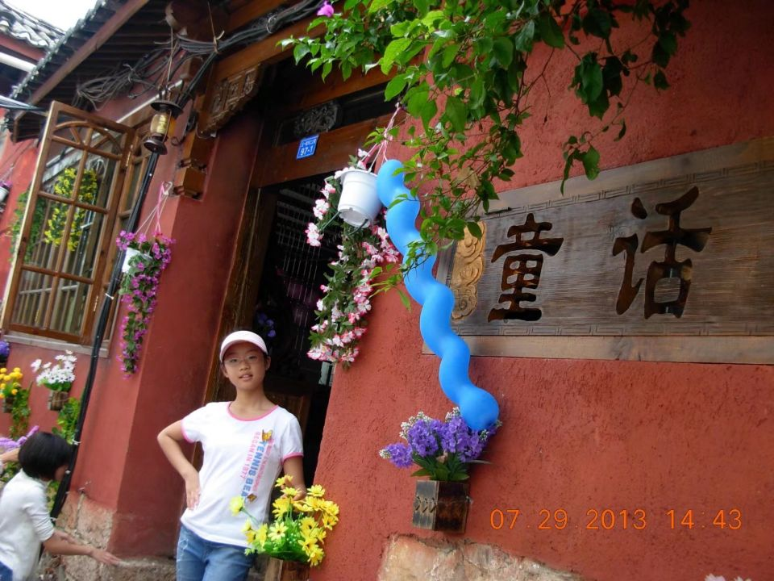
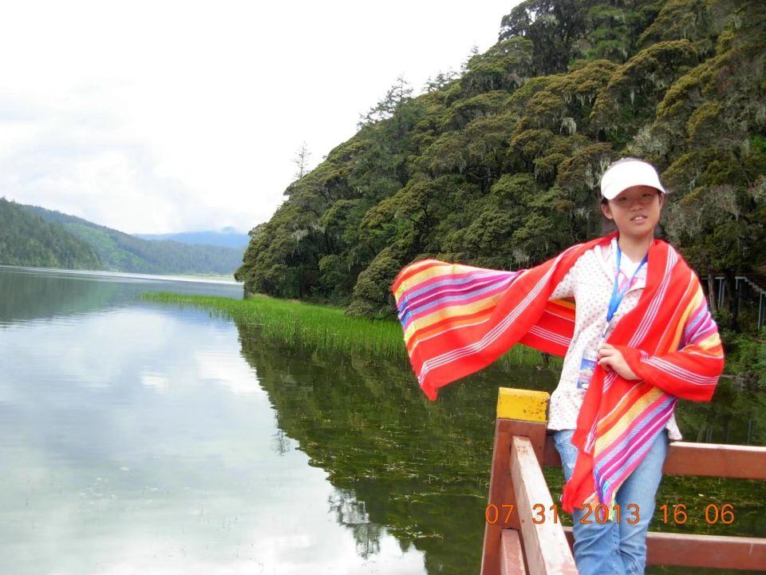
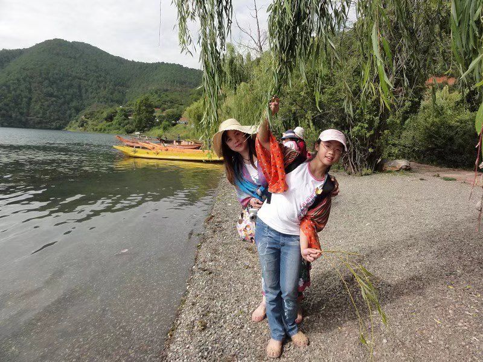
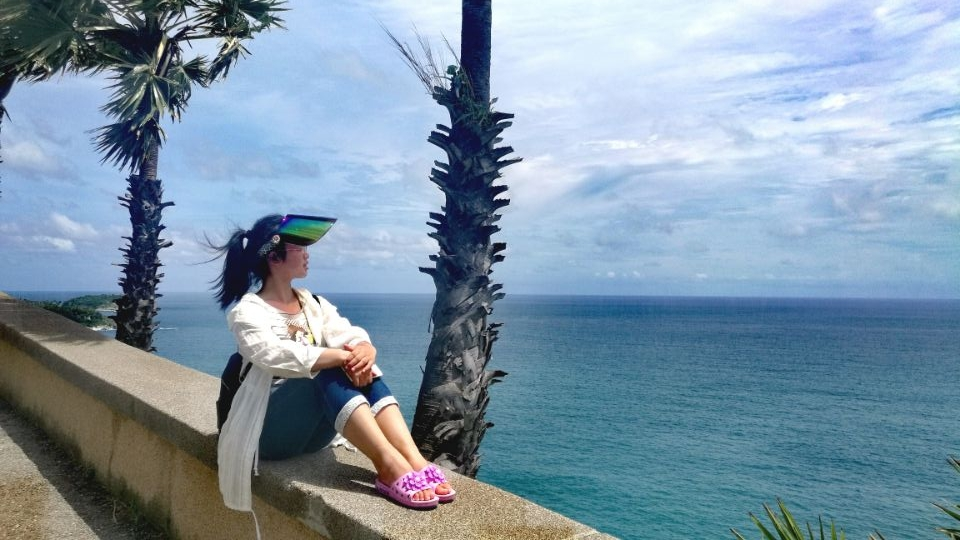

|
我的相册
|
|

|
|
|
|

|

|
|
|
|
|

|
我去过的地方
| 目的地 |
开始时间 |
结束时间 |
地理位置 |
特色美食 |
游玩感受 |
| 丽江古镇 |
2013.7.15 |
2013.7.20 |
云南省中部 |
饵块、过桥米线、鲜花饼 |
慢节奏，气候适宜 |
| 泸沽湖 |
2013.7.22 |
2013.7.25 |
云南省西部 |
摩梭红米、凉糕 |
水质清澈，风景宜人 |
| 香格里拉 |
2013.7.28 |
2013.8.3 |
云南省西部 |
特色烧烤 |
海拔略高，山间气温较低 |
| 黄山 |
2015.8.13 |
2015.8.17 |
安徽省西南部 |
清炒竹笋、黄山烧饼 |
爬山需要较强的身体素质，
但山间风景壮丽，日出很漂亮 |
| 普吉岛 |
2017.7.6 |
2017.7.12 |
泰国印度洋海岸 |
各类海鲜、热带水果 |
沙滩细腻，阳光充足，
非常适合度假放松 |
|